High means substantial risk to the tested task or trustworthy meal state. Medium means meaningful effort or confusion with a workaround. These are expert priorities, not participant frequency estimates.
HighUX01 · Release · Release mismatch
The live URL serves the previous release
Live site
After a reload, whatscooking.expo.app loaded entry-b2a1d2ebf8f585da3f7700b986cfa70f.js, the earlier design-refresh bundle. Settings had no cuisine/calendar controls or AI walkthrough, and Log had no list mode. The local 1.0.4 export loaded entry-e7795f4b76daa1c1808cb35926e33003.js and displayed those features.
Suggested change and retest
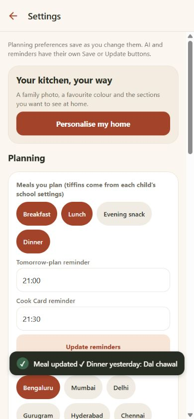
Impact. People testing the supplied URL cannot experience the features described as built, and feedback can be assigned to the wrong release.
Change. Publish the intended release through the normal release process, then smoke-test the public URL. Show an app version/build identifier in Settings so testers can name the version.
Acceptance. The public URL exposes the intended list logging, cuisine controls and walkthrough after reload; its version is visible. Keep this separate from product defects.
Release asset identity; app/src/app/settings.tsx
HighUX02 · Meal decisions · Misleading guidance
A conditional recommendation looks suitable without its required change
Current 1.0.4
Order in offered Veg Manchurian with fried rice labelled “Spicy” and “Fits everyone’s rules” for Riya and Aarav, whose saved spice limit was Mild. Only opening Why this? revealed “Make it mild for Riya, Aarav” and “Spicy for Riya”.
Suggested change and retest
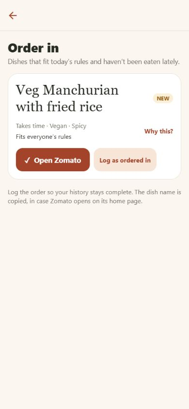
Impact. A hurried person can choose the dish without seeing the change that makes the recommendation acceptable. Ordering adds a further unverified restaurant preparation step.
Change. Put required adaptations on the main card, before the action: “Only if made mild for Riya and Aarav”. Replace an unconditional fit claim when a condition exists. Keep restaurant preparation as something the user confirms.
Acceptance. Every required adaptation is visible without opening an explanation, and survives planning and the cook/order handoff. No unqualified “fits everyone” label appears for a conditional choice.
app/src/components/SuggestionCard.tsx; app/src/app/order-in.tsx
HighUX03 · Cook handoff · Missing essential context
The cook handoff omits a child’s saved allergy
Current 1.0.4 and generated cook preview
Riya was saved with a milk allergy. The six-meal English Cook Card and the actual cook preview identified her boxes but did not show that restriction. The card generator adds mild/vegan notes, but does not carry an allergy instruction.
Suggested change and retest
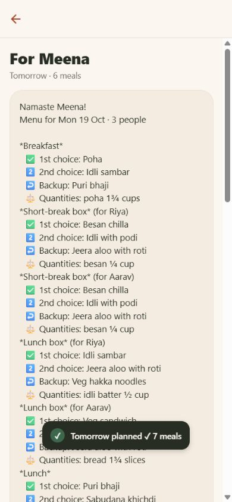
Impact. The recipient must already remember information that the planner supplied to the app. A meal name alone does not communicate the household’s restrictions during preparation or substitution.
Change. Include a concise, reviewable dietary instruction per affected person/plate in the handoff. Keep essential restrictions visible in the planner’s family summary and the cook’s preview.
Acceptance. A card for this test household visibly includes Riya’s milk restriction on the relevant plates, including when an alternative is selected. Verify with someone who knows the food; this review does not certify catalogue allergen accuracy.
app/src/domain/cookcard.ts:166
HighUX04 · Shopping · Behaviour bug
An item marked bought immediately returns as something to buy
Current 1.0.4
After Add all to list, marking bread as bought removed its row and immediately produced “Planned meals need: bread” plus Add all to list for the unchanged plans. The bought row had no visible Undo or bought-items section.
Suggested change and retest
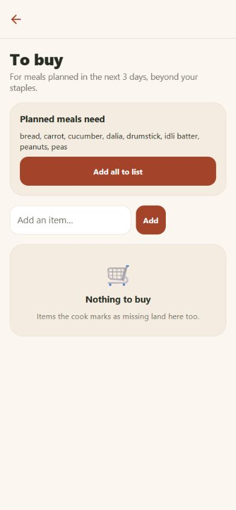
Impact. The list contradicts the completed action, can cause repeat buying, and makes a mistaken tap hard to recover from.
Change. Track which planned need a purchase fulfils. Keep it fulfilled for that need; allow a genuinely later need to reappear. Offer Undo and a reversible bought section.
Acceptance. Mark bread bought: it does not immediately reappear for the same plans. Undo restores the open row. A new, later requirement can request it again without duplicating an already fulfilled need.
app/src/domain/actions.ts:429; app/src/app/cart.tsx
HighUX05 · Logging · Recovery gap
A complete unsaved meal entry disappears after reload
Current 1.0.4
Selected Yesterday, Dinner, Ordered in, and Vegetable pasta in list mode, then confirmed the dish selection. Reloading before the final Save discarded the mode, day, meal, dishes and ordered-in choice with no recovery message.
Suggested change and retest
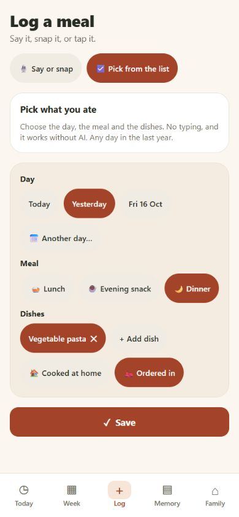
Impact. A short interruption can require repeating the entire task. This conflicts with the low-attention use case even though onboarding has draft recovery.
Change. Persist an unfinished log per family and restore it with Resume / Discard. Keep a draft distinct from a saved meal; changing or leaving a dirty edit should make the consequence clear.
Acceptance. Reload/reopen after preparing this entry restores all fields without creating a history entry. Save creates exactly one meal; Discard removes only the draft.
app/src/app/(tabs)/log.tsx:56
HighUX06 · Logging and memory · Missing control
A normal meal cannot be recorded for just one adult
Current 1.0.4
The normal dinner log and Edit meal flow offered day, meal, dishes and cooked/ordered status, but no choice of diners. The saved pasta dinner appeared under Riya’s Memory filter although the scenario could be an adult’s meal alone. Child tiffin ownership is a separate supported path.
Suggested change and retest
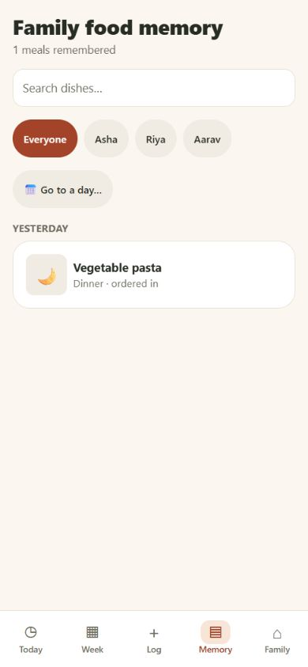
Impact. People cannot accurately represent different sittings or someone eating out alone. Household and per-person history can imply participation that was never selected.
Change. Add “Who ate this?” with Everyone as a convenient editable default. Preserve that choice through edits, repeat logging, Memory filters and recap calculations.
Acceptance. Log a dinner for Asha only: it appears for Asha, does not appear for Riya/Aarav, and can later be corrected to include another diner without changing its identity.
app/src/app/(tabs)/log.tsx; app/src/domain/actions.ts:186
HighUX07 · Week and history · Misleading state
Unlogged past days are filled with fresh meal suggestions
Current 1.0.4
With no meals logged for last week, Week → Prev populated 11–17 October with suggested meals, Plan day, Pin all suggestions and sharing actions. The title still said This week. The separate recap correctly said “Nothing logged last week”. The bottom legend distinguishes faded suggestions, but is far below the initial phone view.
Suggested change and retest
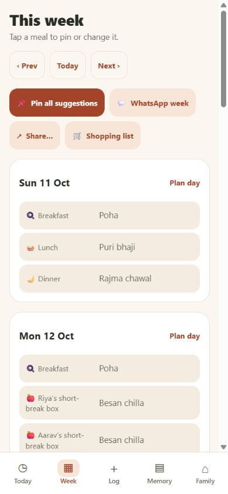
Impact. Reviewing a past week can look like reviewing real household food. The app makes users reconcile two different representations of the same dates.
Change. Past dates should show existing records or explicitly labelled saved plans; empty past slots should offer Log a meal. Show the visible date range and plain per-meal states such as Suggested, Planned and Logged beside each meal.
Acceptance. An unlogged past week shows empty history rather than newly generated meals. A saved plan remains visibly a plan until confirmed. The week range and state can be understood without the bottom legend.
app/src/app/(tabs)/plan.tsx:37
MediumUX08 · Cook handoff · Action placement
The primary cook action is buried below a long message
Current 1.0.4
For a household with two children, the six-meal card printed all ranked choices, quantities and the long reply link before Send on WhatsApp. At 390 × 844, the send button began about 1,894 px below the page top.
Suggested change and retest
Impact. The person reaches a large text preview instead of an immediately understandable next step. It takes more than two screen heights of content to reach the main action.
Change. Use a compact, expandable preview and a fixed handoff action. Keep the long reply URL in the shared message, while displaying a human-readable link in the in-app preview.
Acceptance. The first phone viewport shows who/date/meal count, essential dietary instructions and the primary handoff action. Full text remains reviewable and copyable.
app/src/app/cook-card.tsx:105
MediumUX09 · Weekly planning · Suggestion quality
Unpinned weekdays repeat nearly identical menus
Current 1.0.4, test household
The current weekly view repeated the same Tuesday/Wednesday choices and many Thursday/Friday choices, including the same dinner. Multiple school boxes also repeated. This was observed for the test household, not measured across all families.
Suggested change and retest
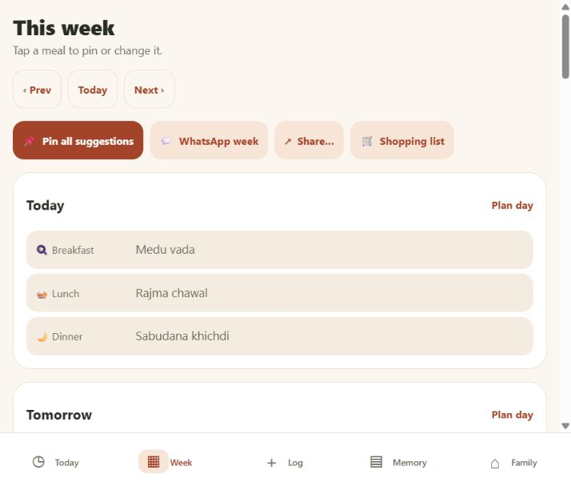
Impact. A full-looking week still requires manual variety work. Pin all suggestions can commit a repetitive menu before a user notices it.
Change. Consider variety across the proposed week before offering the bulk action, while respecting real family favourites and restrictions. Offer an explicit repeat/variety preference and a review before committing the week.
Acceptance. A sufficiently broad compatible catalogue yields a visibly reviewed week, with repeats explained or intentional. Regenerating unpinned slots does not overwrite confirmed choices.
app/src/app/(tabs)/plan.tsx; app/src/state/draft.ts
MediumUX10 · Shopping · Review friction
Ingredient review is all-or-nothing and the empty state contradicts it
Current 1.0.4
The list showed eight ingredients under Planned meals need and an Add all to list button, followed by “Nothing to buy”. There was no per-ingredient confirmation, quantity editing or clear explanation of which meal required each ingredient. The earlier planned dal/rice produced an empty list because household staples were assumed.
Suggested change and retest
Impact. The user must mentally reconcile what is required, what is assumed present and what is already on the list. “Nothing to buy” can be read as assurance that preparation is covered.
Change. Show a reviewable ingredient checklist with meal source and optional quantity. Make “Already have it” explicit. Use “Your list is empty—review 8 suggested items” when pending suggestions exist.
Acceptance. A person can include some suggested ingredients and exclude others before adding them; edit a manually entered item; and inspect the assumptions behind an empty list.
app/src/app/cart.tsx:43
MediumUX11 · Week to shopping · Scope mismatch
Shopping from a week always uses the next three days
Current 1.0.4
Week’s Shopping list opens the same cart that explicitly covers today through the next two days, regardless of the week being viewed. There is no chosen-week or custom-range option.
Suggested change and retest
Impact. Someone shopping for a full week has to infer which ingredients are missing from the list and cannot carry their chosen planning period into the next task.
Change. Carry the selected week into ingredient review, or ask “Next 3 days / This plan / Choose dates” with the active range always visible.
Acceptance. Opening shopping for a future or current week includes that selected range, and changing the range updates the reviewed needs without silently mixing periods.
app/src/app/(tabs)/plan.tsx:122; app/src/app/cart.tsx:25
MediumUX12 · First use · Form burden
Adding a child still feels like completing a settings page
Live and current 1.0.4
Add child opens a scrolling sheet containing role, age, diet, special dietary rules, spice, free-text restrictions, calendar and school configuration before Save person at the bottom. The current calendar switch reduces the earlier form, but the core structure remains lengthy.
Suggested change and retest
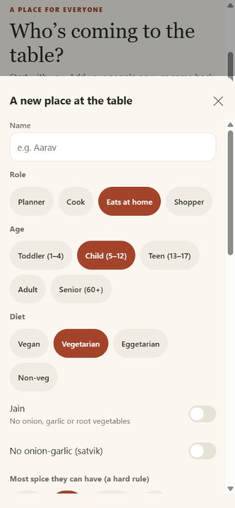
Impact. A first-time parent must decide what matters before seeing the first recommendation. The form suggests that every section needs attention even though many defaults are usable.
Change. Start with name, diet/allergies and whether school boxes are needed. Collapse advanced preferences, infer obvious child defaults and keep Save / Finish later reachable. Make later editing easy to find.
Acceptance. A basic child can be added without inspecting every settings section. The user can identify what is required, keep a draft and return to school details later.
app/src/components/MemberForm.tsx; app/src/app/onboarding.tsx
MediumUX13 · Dish selection · Browse dead end
Cuisine browsing silently stops after forty dishes
Current 1.0.4
In dinner logging, the Indian shelf ended at Onion uttapam followed by Save; there was no Show more. The component sorts dishes alphabetically and takes the first 40. Search can find more, but that requires knowing or typing a name.
Suggested change and retest
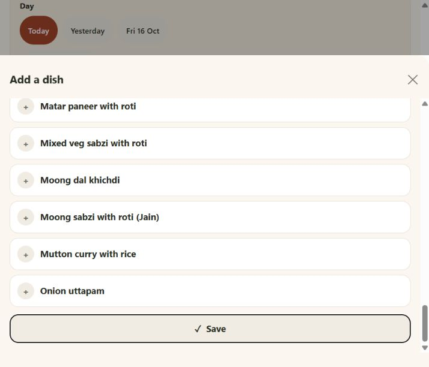
Impact. A person who expects to browse without typing can miss later alphabetic dishes and conclude that the catalogue does not contain them.
Change. Allow progressive loading or a complete manageable browse list, show the result count and preserve the selected dishes. Include a discoverable shelf for the family’s own dishes.
Acceptance. A compatible dish beyond the first forty is reachable without typing. A visible count/loading control explains any intentional limit.
app/src/components/DishPicker.tsx:201
MediumUX14 · Explanations and preferences · Cognitive load
Why this? exposes scoring machinery instead of a decision explanation
Live; shared component in current source
Why this? showed lines such as -8 New for your family, +4 A weekend favourite, and negative spice/adaptation scores. Settings also exposes familiarity choices as 20/40/60/80. These values do not tell a household what action to take.
Suggested change and retest
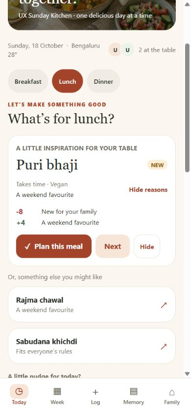
Impact. The explanation asks the user to interpret an internal score and can make a newly suggested dish look like a problem. Important conditions compete with numeric ranking details.
Change. Use a short explanation ordered by importance: required changes, fit for people/time, ingredients used and reason for variety. Use named familiarity choices. Keep scoring details in a diagnostic view if needed.
Acceptance. A person can explain why the dish was suggested and what, if anything, they must change without knowing how a score works.
app/src/components/SuggestionCard.tsx; app/src/app/settings.tsx
MediumUX15 · Navigation and customisation · Hidden capability
Hiding home sections removes normal access to core features
Current 1.0.4
Turning off From your food memory removed the Our food week entry point. Turning off What’s in the kitchen removed Order in from home. The main five tabs have no independent recap or order entry; the source places those actions inside the optional cards. Shopping remains reachable from Week.
Suggested change and retest
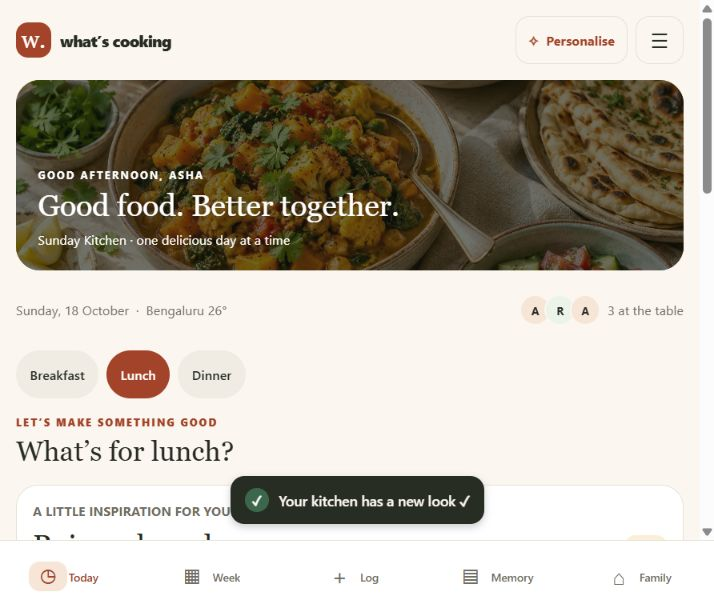
Impact. A cosmetic choice changes which tasks are discoverable. Users must remember to restore a home section to get back to a feature.
Change. Give core tasks permanent navigation independent of home cards: for example History / Our food week within Memory, and Order in beside the meal decision or in a stable actions menu.
Acceptance. The recap and order flow are reachable with all optional home cards hidden. Hiding a card changes presentation rather than removing a task.
app/src/app/(tabs)/index.tsx:188; app/src/app/(tabs)/index.tsx:196
MediumUX16 · Dates and corrections · Ambiguous inference
A yearless future date silently becomes last year
Current 1.0.4
On 18 October 2026, typing 19 Oct selected Sunday 19 October 2025 rather than asking about the year. The toast and accessible button included 2025, but the selected day chip showed only Sun 19 Oct. Explicit 2026-10-19 was correctly refused as future.
Suggested change and retest
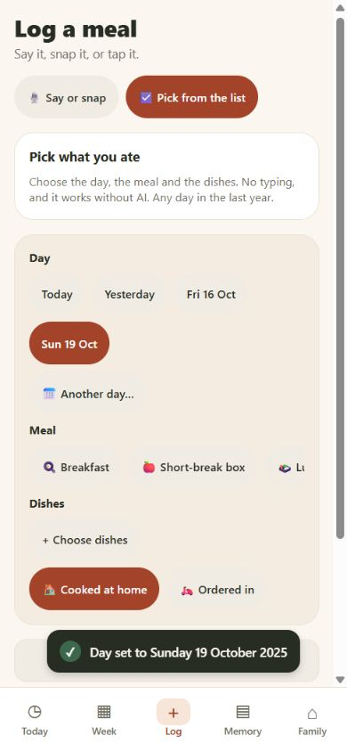
Impact. A small typing mistake can put an entry almost a year away while still satisfying the rule against future dates. The main form makes that jump easy to overlook.
Change. Show the fully resolved date, including a different year, before applying it. When an omitted year would roll back, ask for confirmation or request a year.
Acceptance. Typing 19 Oct on this date cannot quietly create a 2025 entry. A user deliberately selecting 2025 can still do so; explicit future dates stay blocked.
app/src/domain/dates.ts:195; app/src/components/DatePickerSheet.tsx
MediumUX17 · Ordering · Choice dead end
Order in offers one dish with no way to choose another
Current 1.0.4
Order in presented one recommendation with Why this?, Open Zomato and Log as ordered in. It had no Next, change-dish search or alternate suggestions. It also showed cooking-oriented metadata such as Takes time.
Suggested change and retest
Impact. Someone who does not want that dish must leave the task or bypass the app’s suggestions. The familiar Next interaction from Today disappears.
Change. Keep Next / Choose another and cuisine browsing available in the order flow. Use ordering-relevant information and keep dietary conditions visible. Keep opening a provider distinct from recording a completed order.
Acceptance. The user can reject the first dish and choose a different compatible meal within the flow, without logging an order or opening an external provider first.
app/src/app/order-in.tsx
What’s Cooking — intuitive-use test pack
18 October 2026 · Facilitator materials · Hypothetical scenarios for testing, not research personas.
How to run it
Give the participant the goal and starting context, not the expected path. Ask them to think aloud; do not explain the navigation or rescue a wrong turn immediately. Use disposable household data. Record what they do and say, separating observation from your interpretation. The expected paths below are for the facilitator and describe the intended experience; some controls are currently missing.
For each task, record: completed without help / completed with help / not completed; time from reading the goal to a verified outcome; first action; wrong turns/backtracking; requests for help; whether the participant can explain what was saved; and the 1–7 ease rating. Do not treat automated browser timings as participant performance. This review has no recruited participants and reports no user success rate.
Three realistic scenarios
Five questions after each task
- What did you expect the main button to do, and what actually happened?
- Where, if anywhere, did you pause, go back, or look for a different way?
- How easy or difficult was this task, from 1 (very difficult) to 7 (very easy), and what most affected that rating?
- What is saved now—which day, meal, people and status—and what on the screen tells you that?
- If you needed to correct this tomorrow, where would you go first?
Exploratory checklist
These are test prompts, not a claim that every item passed. Keep the language of the participant’s goal; avoid teaching the interface during the task.
Finding the next action
Choosing and planning
Shopping and cook handoff
Logging, correction and return visits
Input and accessibility
Participant note sheet
Keep direct participant quotes distinct from facilitator summaries. Retest the same goals after changes; do not substitute a feature-by-feature demonstration for a usability task.